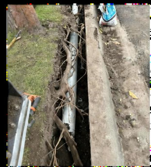
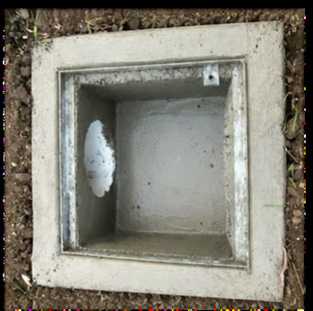
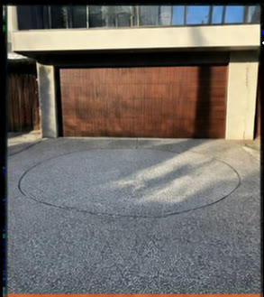

For builders and project teams
Civil and concrete works
Practical civil, concrete and underground work for ongoing projects. Based in Maribyrnong, working across Melbourne's north, west and east.

Civil pits and pipes
Pipe laying, pit construction and utility connections.
Wollemi job

Non-destructive digging (NDD)
Careful excavation where existing services and site conditions call for it.
Wollemi job

Footpaths and crossovers
Concrete footpaths, driveways and crossovers, new, repaired or replaced.
Wollemi job

Complex concrete
Detailed pours, cast-in-place pits and circular turntable slabs.
Wollemi job
Footpaths, crossovers, kerb and channel
Built to the local council's specification, whether the job is for a builder, an owner or the council.
- Footpaths and public walkways
- Vehicle crossovers
- Kerb and channel
- Drainage pits, pipes and connections


Vehicle turntables
A turntable lets a car turn around on the driveway and drive out forwards, instead of reversing onto the street. It suits tight blocks and narrow driveways, and saves space for parking on site.
- Homes and commercial sites, including recent turntables in Brighton and Kew
- The slab, the pit and the install, with our turntable supplier
- We'll tell you at the start if the job needs a building permit
Which turntable brand do you install?
For contractors, add if you have them: a capability statement PDF, your equipment (for example a vacuum truck for NDD), insurances and site tickets.
Got upcoming civil or concrete work?
Send us the scope or drawings, or call Ben on 0481 008 080, and we'll come back to you with a price.